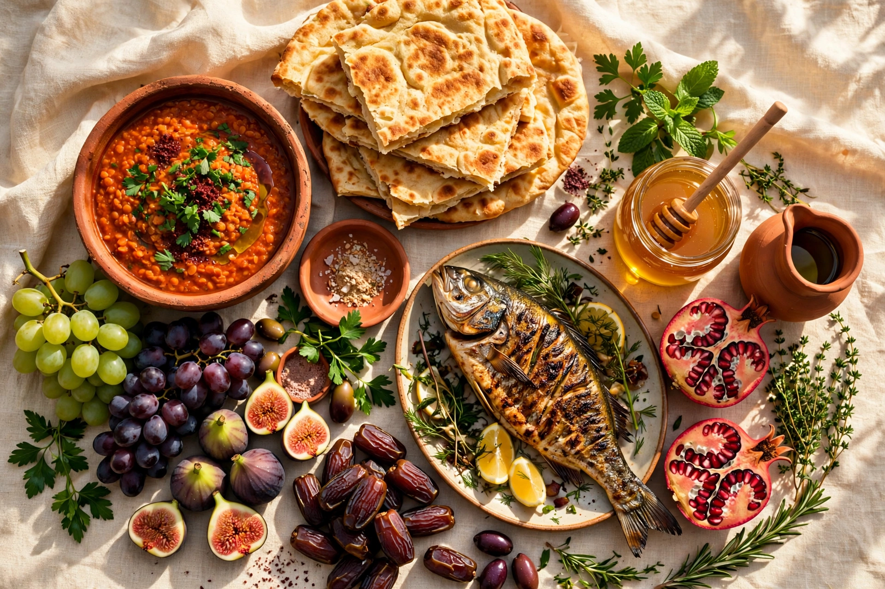
Daily Word 360
The Biblical
Cookbook
25 Bible-inspired recipes & foods
from the Promised Land
Tap or swipe to open →
Welcome
How to Use
This Book
- 1Flip the pages
Tap a page corner, swipe, or use the arrows below. - 2Jump to any recipe
Tap a recipe name in Contents to jump to it. - 3Read the story first
Every recipe begins with the Bible moment behind the food. - 4Cook & share
Make it your own — then share the meal and the story.
Made for your screen — read it on your phone or tablet. No printing needed.
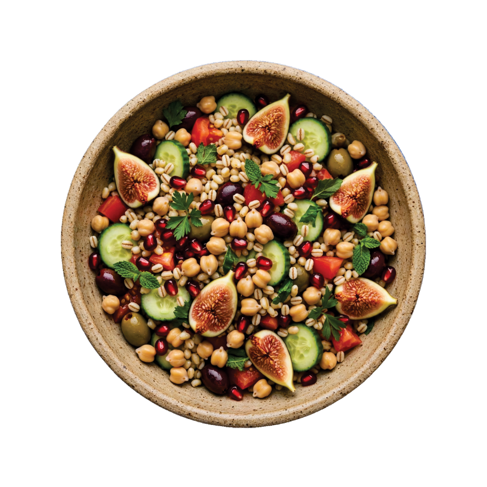
Contents
25 Recipes
Tap a recipe to jump to it
Breads & Grains
Soups & Stews
Fish
Recipes 14–25 and the Articles are on the next page →
Contents · continued
More Recipes
& Articles
Tap a recipe to jump to it
Fruits, Honey & Sweets
Feasts & Celebrations
Articles
All 25 recipes and all 4 articles are in this book — tap any name to jump to it.
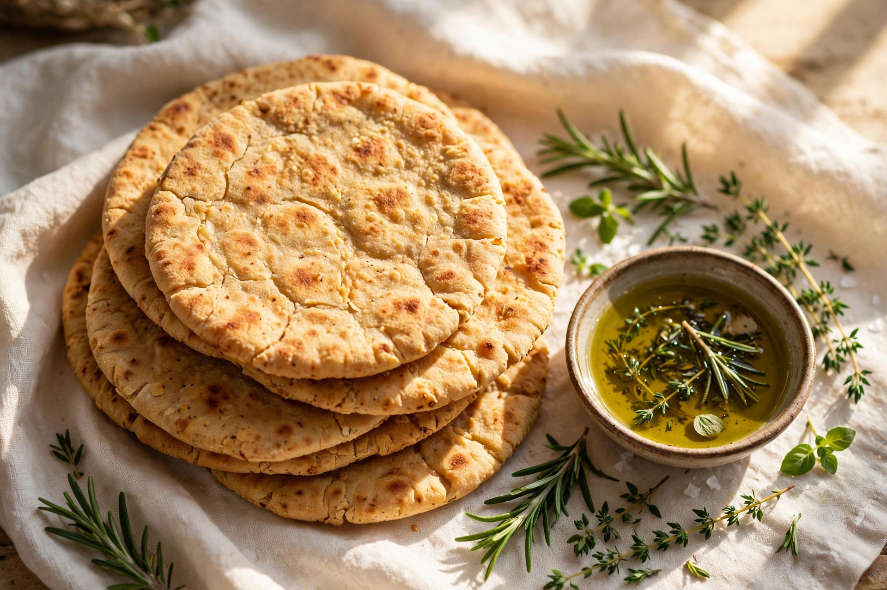
Breads & Grains · Recipe 1
Unleavened Bread
of the Exodus
“With the dough the Israelites had brought from Egypt, they baked loaves of unleavened bread. The dough was without yeast because they had been driven out of Egypt and did not have time to prepare food for themselves.” — Exodus 12:39 (NIV)
On the night Israel left Egypt, there was no time for bread to rise — so they baked it flat, fast, and carried it into freedom. This is that bread: golden, crisp at the edges, ready in under half an hour, and best torn apart and shared while it is still warm.
Recipe 1 · Unleavened Bread
What You Need
- 3 cups all-purpose flour (or whole wheat)
- 1 tsp fine sea salt
- 1 cup warm water
- 3 tbsp olive oil, plus more for brushing
- 1 tbsp honey (optional)
- Sesame seeds & flaky salt, to finish
How to Make It
- Mix the flour and salt in a large bowl. Stir in the water, olive oil and honey until a soft dough forms.
- Knead on a floured surface for 5 minutes, until smooth. Rest, covered, for 10 minutes.
- Divide into 8 pieces. Roll each one thin — about ¼ inch thick.
- Cook in a hot, dry skillet for about 2 minutes per side, until golden spots appear.
- Brush with olive oil, sprinkle with sesame seeds and salt. Serve warm.
Breads & Grains · Recipe 2
Manna Morning Cakes
“The people of Israel called the bread manna. It was white like coriander seed and tasted like wafers made with honey.” — Exodus 16:31 (NIV)
Manna was the bread God sent from heaven — small, white, and sweet as honey wafers, gathered fresh every morning. These little cakes taste like that morning gift: soft, golden, and sweetened with honey.
Recipe 2 · Manna Morning Cakes
What You Need
- 2 cups all-purpose flour
- 1 tbsp baking powder
- 1/2 tsp fine sea salt
- 2 tbsp honey
- 1 cup milk
- 2 tbsp melted butter
- 1 tsp vanilla extract
- 1 egg
How to Make It
- Whisk the flour, baking powder and salt in a large bowl.
- Whisk the honey, milk, butter, vanilla and egg in a second bowl.
- Stir the wet mixture into the dry until just combined — a few lumps are fine.
- Spoon small rounds onto a buttered griddle over medium heat.
- Cook 2 minutes per side, until golden. Serve warm with extra honey.
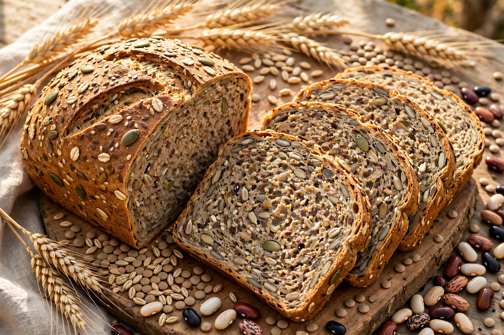
Breads & Grains · Recipe 3
Ezekiel’s Sprouted
Grain Bread
“Take wheat and barley, beans and lentils, millet and spelt; put them in a storage jar and use them to make bread for yourself.” — Ezekiel 4:9 (NIV)
God told Ezekiel to take wheat and barley, beans and lentils, millet and spelt, and make bread from them all — one loaf holding the whole harvest. This hearty loaf is that idea in a modern kitchen: dense, nutty, and made to last.
Recipe 3 · Ezekiel’s Sprouted Grain Bread
What You Need
- 2 cups whole wheat flour
- 1 cup barley flour
- 1/2 cup lentil flour (or ground red lentils)
- 1/4 cup millet flour
- 1/4 cup spelt flour
- 2 tsp instant yeast
- 1 1/2 tsp fine sea salt
- 1 1/4 cups warm water
- 2 tbsp honey
- 2 tbsp olive oil
How to Make It
- Mix all the flours, yeast and salt in a large bowl.
- Stir in the water, honey and oil until a soft dough forms.
- Knead on a floured surface for 8 minutes, until smooth and springy.
- Cover and let rise 1 hour, until doubled in size.
- Shape into a loaf. Bake at 375°F (190°C) for 35 minutes, until deep brown and hollow-sounding when tapped.
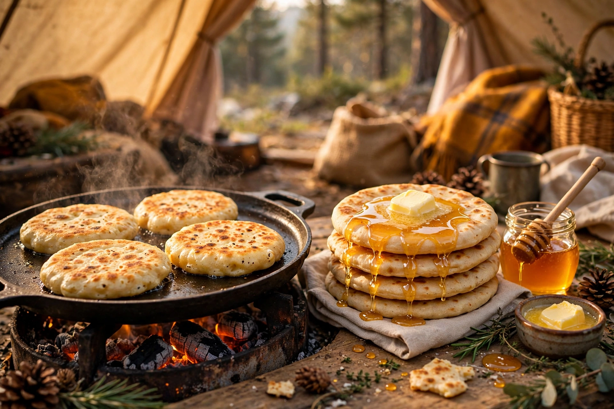
Breads & Grains · Recipe 4
Sarah’s Tent Cakes
“So Abraham hurried into the tent to Sarah. ‘Quick,’ he said, ‘get three seahs of the finest flour and knead it and bake some bread.’” — Genesis 18:6 (NIV)
Three visitors arrived at midday, and Sarah baked bread in a hurry — fine flour, kneaded fast, cooked on a hot griddle. These soft tent cakes are ready in minutes, just like hers.
Recipe 4 · Sarah’s Tent Cakes
What You Need
- 3 cups fine flour (all-purpose)
- 1 tsp baking powder
- 1 tsp fine sea salt
- 1 cup warm water
- 2 tbsp olive oil
- 1 tbsp honey
- A little butter, for serving
How to Make It
- Mix the flour, baking powder and salt in a large bowl.
- Add the water, olive oil and honey; knead for 3 minutes until smooth.
- Divide into 6 rounds and roll each one thin.
- Cook on a hot, dry griddle for 2 minutes per side, until golden spots appear.
- Serve warm with butter and honey.
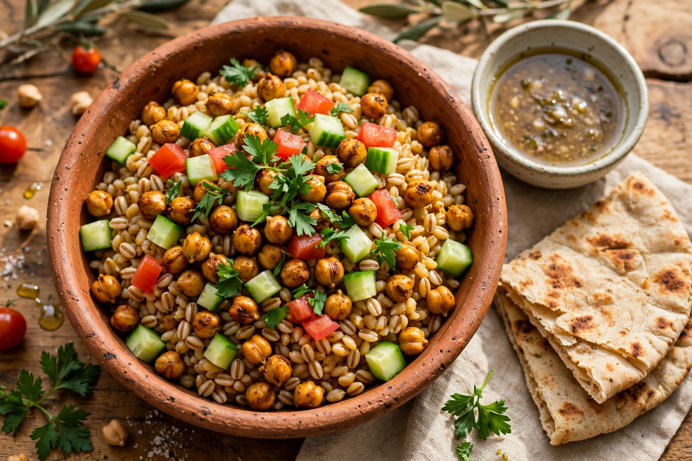
Breads & Grains · Recipe 5
Ruth’s Roasted
Barley Bowl
“At mealtime Boaz said to her, ‘Come over here. Have some bread and dip it in the wine vinegar.’ When she sat down with the harvesters, he offered her some roasted grain. She ate all she wanted and had some left over.” — Ruth 2:14 (NIV)
Ruth was a stranger gleaning in a foreign field — and Boaz invited her to his own table, with roasted grain and bread to dip. This warm barley bowl is that welcome in a dish: simple, filling, and shared.
Recipe 5 · Ruth’s Roasted Barley Bowl
What You Need
- 1 cup pearl barley
- 3 cups water or vegetable broth
- 2 tbsp olive oil
- 1 cup roasted chickpeas (or toasted almonds)
- 1 cucumber, diced · 1 tomato, diced
- 2 tbsp vinegar (red wine or apple cider)
- Fresh parsley · salt to taste
How to Make It
- Rinse the barley, then simmer in water or broth for 35 minutes until tender.
- Drain and toss with the olive oil.
- Add the chickpeas, cucumber, tomato and parsley.
- Splash in the vinegar and season with salt.
- Serve warm, with bread for dipping.
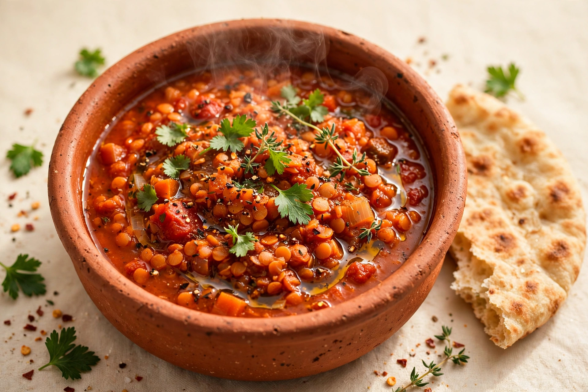
Soups & Stews · Recipe 6
Jacob’s
Lentil Stew
“Once when Jacob was cooking some stew, Esau came in from the open country, famished.” — Genesis 25:29 (NIV) “Then Jacob gave Esau some bread and some lentil stew.” — Genesis 25:34 (NIV)
The famous red stew — so tempting that Esau traded his birthright for a single bowl. Our version keeps the red lentils at its heart, with onion, garlic, tomato and cumin. One warning from the story: never trade something precious for something you can cook again tomorrow.
Recipe 6 · Jacob’s Lentil Stew
What You Need
- 2 tbsp olive oil
- 1 onion, diced · 3 garlic cloves, minced
- 2 tsp ground cumin · 1 tsp paprika
- 1½ cups red lentils, rinsed
- 1 can (14 oz) diced tomatoes
- 4 cups vegetable broth
- 1 carrot, diced · salt to taste
- Lemon juice & fresh parsley, to finish
How to Make It
- Warm the oil in a large pot; cook the onion 5 minutes until soft.
- Add garlic, cumin and paprika; stir 1 minute until fragrant.
- Add the lentils, tomatoes, broth and carrot; bring to a gentle boil.
- Simmer, partly covered, 25 minutes, until the lentils are soft and thick.
- Season with salt and lemon. Serve hot with parsley and warm flatbread.
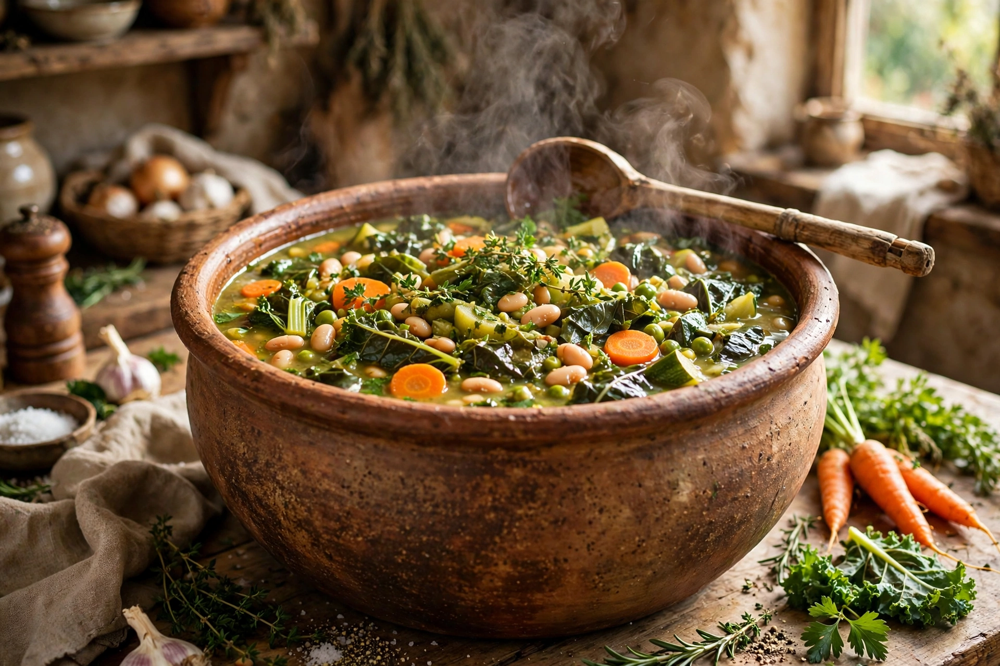
Soups & Stews · Recipe 7
Elisha’s Garden Stew
“Elisha returned to Gilgal and there was a famine in that region. While the company of the prophets was meeting with him, he said to his servant, ‘Put on the large pot and cook some stew for these prophets.’” — 2 Kings 4:38 (NIV) “Elisha said, ‘Get some flour.’ He put it into the pot and said, ‘Serve it to the people to eat.’ And there was nothing harmful in the pot.” — 2 Kings 4:41 (NIV)
A big pot of stew for a hungry crowd — but someone had tossed in wild gourds that made it bitter and unsafe. Elisha stirred in a little flour, and the pot was made good again. This is a garden stew worth sharing: greens, beans and vegetables, made safe and simple.
Recipe 7 · Elisha’s Garden Stew
What You Need
- 2 tbsp olive oil
- 1 onion, diced · 3 garlic cloves, minced
- 2 carrots, sliced · 2 zucchini, diced
- 1 can (15 oz) white beans, drained
- 4 cups vegetable broth
- 2 cups chopped greens (spinach or kale)
- 1 tsp ground cumin
- Salt and lemon juice, to taste
How to Make It
- Warm the oil in a large pot; cook the onion for 5 minutes until soft.
- Add the garlic, carrots and zucchini; cook 5 minutes more.
- Add the beans, broth and cumin; simmer 20 minutes.
- Stir in the greens until just wilted.
- Season with salt and lemon. Serve hot with bread.
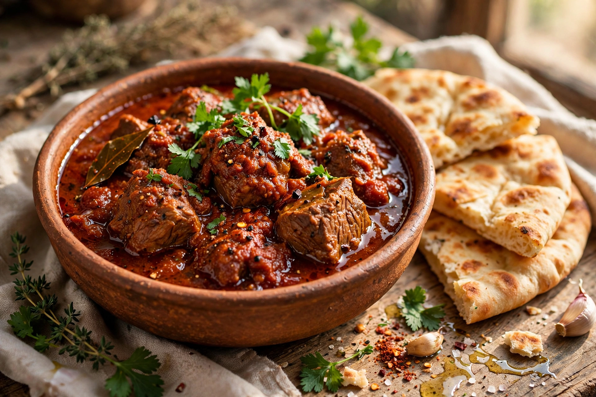
Soups & Stews · Recipe 8
Rebekah’s Savory
Goat Stew
“Go out to the flock and bring me two choice young goats, so I can prepare some tasty food for your father, just the way he likes it.” — Genesis 27:9 (NIV)
Rebekah knew exactly how Isaac liked his food — rich, savory, and cooked just right. This slow-cooked goat stew is her ‘tasty food’: tender meat in a deep, spiced sauce, best served with warm bread.
Recipe 8 · Rebekah’s Savory Goat Stew
What You Need
- 2 lb goat meat (or lamb), cut into chunks
- 2 tbsp olive oil
- 1 onion, sliced · 3 garlic cloves, minced
- 1 tbsp tomato paste
- 1 tsp ground cumin · 1 tsp paprika
- 2 cups beef or vegetable broth
- 2 carrots, chopped
- Salt and pepper, to taste
How to Make It
- Brown the meat in the oil in batches; set aside.
- Cook the onion and garlic for 5 minutes.
- Stir in the tomato paste, cumin and paprika.
- Return the meat to the pot; add the broth and carrots.
- Cover and simmer 1 1/2 hours, until tender. Season and serve.
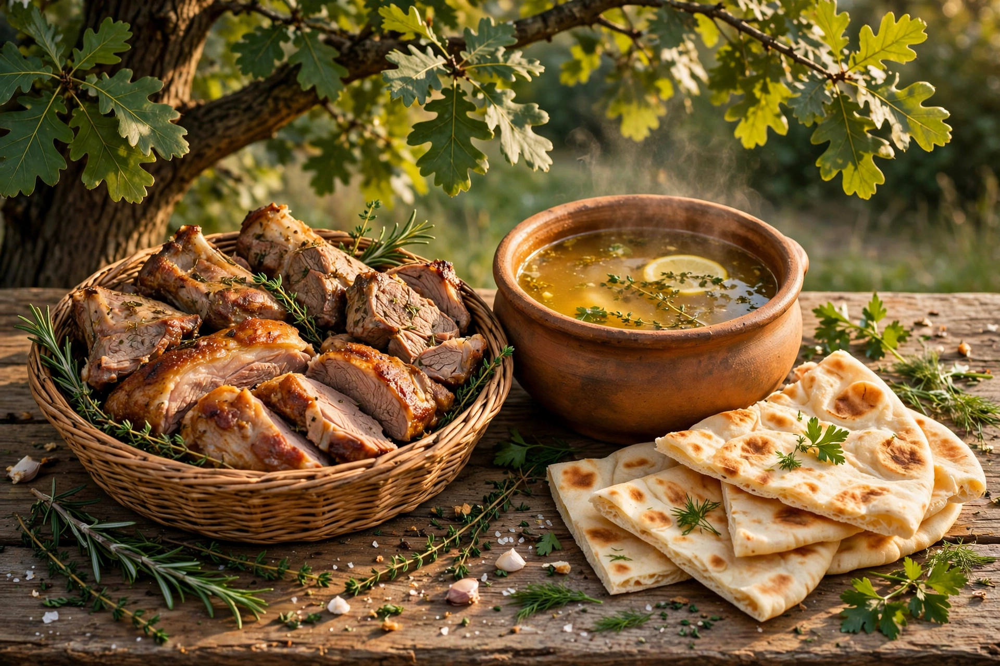
Soups & Stews · Recipe 9
Gideon’s Meat
& Broth
“Gideon went inside, prepared a young goat, and from an ephah of flour he made bread without yeast. Putting the meat in a basket and its broth in a pot, he brought them out and offered them to him under the oak.” — Judges 6:19 (NIV)
Gideon did not know his guest was an angel — he simply gave his best: meat, fresh bread, and a warm pot of broth, carried out under the oak tree. This is a meal of welcome: tender meat with its own rich broth and flatbread to dip.
Recipe 9 · Gideon’s Meat & Broth
What You Need
- 2 lb goat or lamb stew meat
- 4 cups water
- 1 onion, halved · 2 carrots, chopped
- 2 bay leaves
- 1 tsp salt · 1/2 tsp black pepper
- Flatbread, to serve
- Fresh herbs, to finish
How to Make It
- Put the meat, water, onion, carrots and bay leaves in a large pot.
- Bring to a boil and skim off any foam.
- Cover and simmer gently for 1 1/2 hours, until tender.
- Lift out the meat; strain the broth and season it.
- Serve the meat in a basket with the broth in a pot, and flatbread alongside.
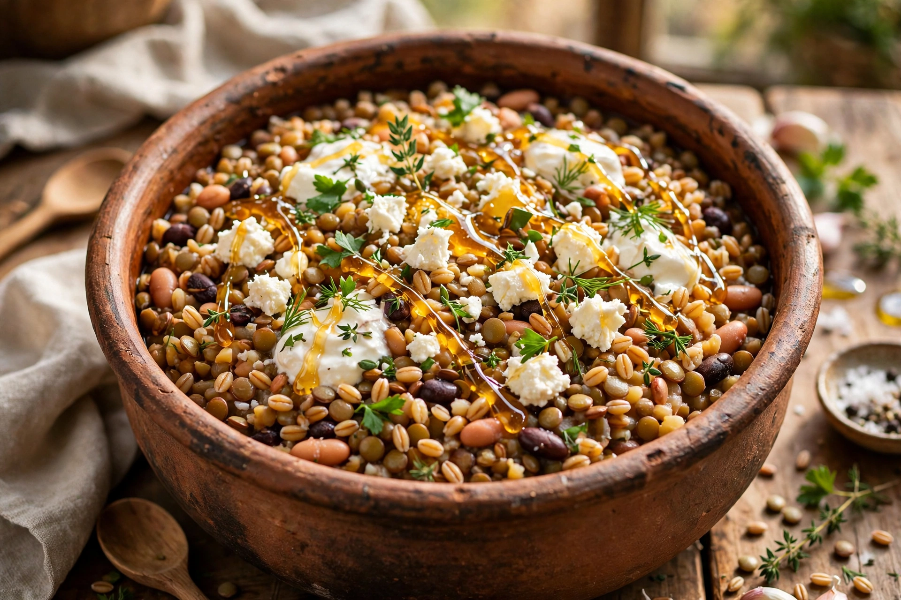
Soups & Stews · Recipe 10
David’s Provision Pot
“They also brought wheat and barley, flour and roasted grain, beans and lentils,” — 2 Samuel 17:28 (NIV) “honey and curds, sheep, and cheese from cows’ milk for David and his people to eat.” — 2 Samuel 17:29 (NIV)
David and his people were exhausted, hungry and thirsty in the wilderness — and friends arrived with everything: grain, beans, lentils, honey and cheese. This one-pot meal brings those provisions together: hearty, sweet, and made to feed a crowd.
Recipe 10 · David’s Provision Pot
What You Need
- 1 cup wheat berries (or farro)
- 1 cup barley
- 1 cup lentils, rinsed
- 1 can (15 oz) beans, drained
- 2 tbsp olive oil · 1 onion, diced
- 4 cups vegetable broth
- 2 tbsp honey
- Crumbled cheese and yogurt, to serve
How to Make It
- Soak the wheat and barley overnight if you can; rinse well.
- Cook the onion in the oil for 5 minutes.
- Add the grains, lentils, beans and broth.
- Simmer 45 minutes, until tender and thick.
- Stir in the honey; serve with cheese and yogurt.
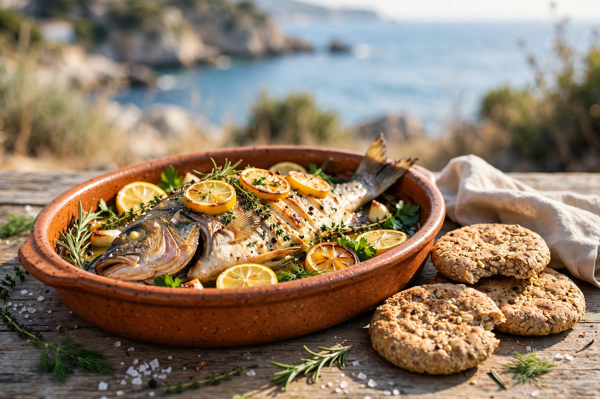
Fish · Recipe 11
Fish & Loaves Bake
“Here is a boy with five small barley loaves and two small fish, but how far will they go among so many?” — John 6:9 (NIV)
A boy’s small lunch — five barley loaves and two fish — became a feast for thousands in Jesus’ hands. This simple bake honors that lunch: whole fish with barley flatbread, lemon and herbs.
Recipe 11 · Fish & Loaves Bake
What You Need
- 4 white fish fillets (or 2 whole fish)
- 2 tbsp olive oil
- 1 lemon, sliced
- 3 garlic cloves, minced
- 1 tsp dried oregano
- Salt and pepper, to taste
- Barley flatbread, to serve
- Fresh parsley
How to Make It
- Heat the oven to 400°F (200°C).
- Place the fish in an oiled baking dish.
- Drizzle with oil; add the lemon, garlic and oregano.
- Bake 15–18 minutes, until the fish flakes easily.
- Serve with warm barley flatbread and parsley.
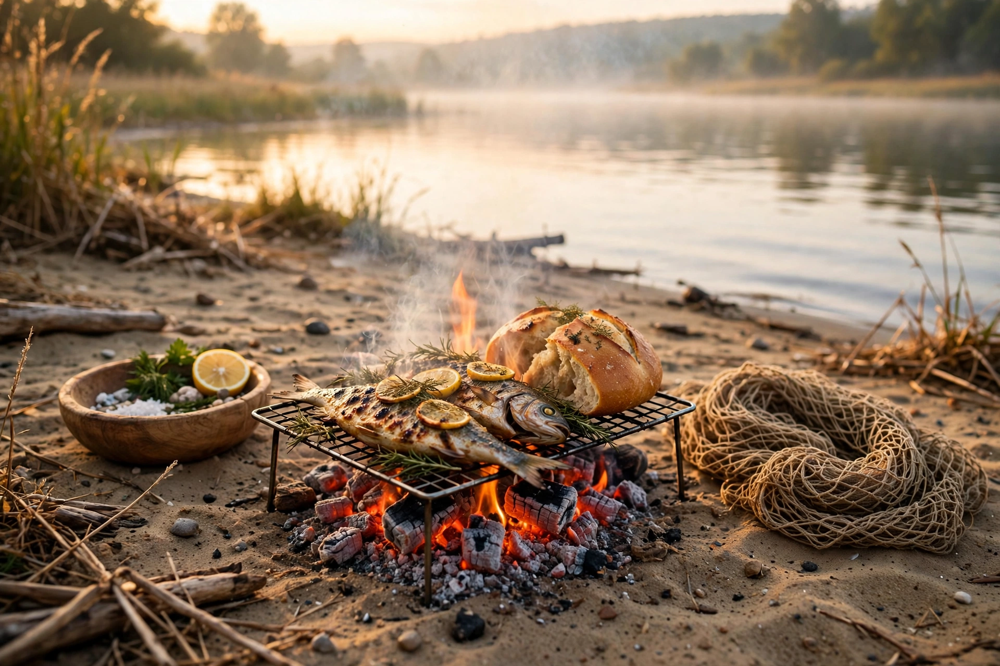
Fish · Recipe 12
Breakfast on the Shore
“When they landed, they saw a fire of burning coals there with fish on it, and some bread.” — John 21:9 (NIV)
After a long night of fishing, the disciples came ashore to find breakfast already cooking — fish on a fire of burning coals, and bread waiting. This is that breakfast: fresh fish grilled over coals, with warm bread, eaten slowly in the morning light.
Recipe 12 · Breakfast on the Shore
What You Need
- 4 whole small fish (or 4 fillets), cleaned
- 2 tbsp olive oil
- 1 lemon, halved
- Salt and pepper, to taste
- 4 slices of bread
- Fresh herbs
How to Make It
- Light a charcoal fire (or heat a grill pan).
- Brush the fish with oil; season with salt and pepper.
- Grill 3–4 minutes per side, until the skin is crisp.
- Warm the bread over the coals.
- Serve the fish with lemon, herbs and bread.
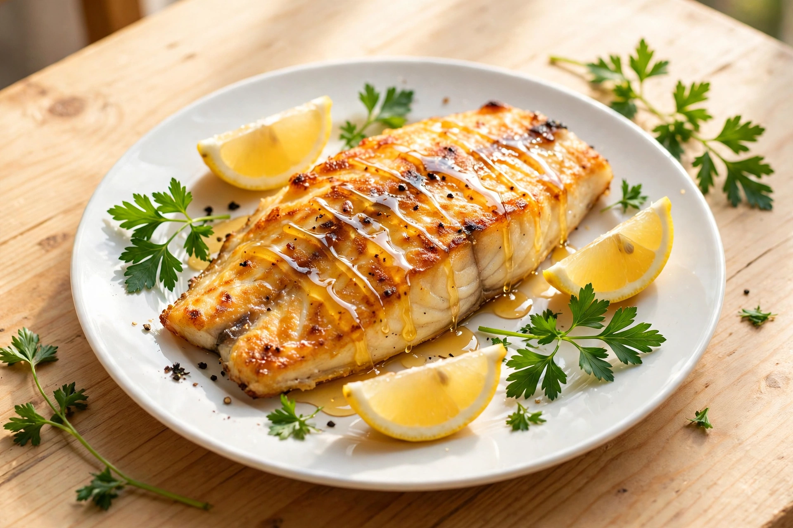
Fish · Recipe 13
Broiled Fish with
Honey Drizzle
“They gave him a piece of broiled fish, and he took it and ate it in their presence.” — Luke 24:42-43 (NIV)
After the resurrection, the risen Jesus asked for food — and the disciples gave him a piece of broiled fish, which he ate in front of them. Our version keeps the fish simple and broiled, with a light honey drizzle at serving. The honey is our own touch: the NIV records the fish, and the drizzle is how we serve it today.
Recipe 13 · Broiled Fish with Honey Drizzle
What You Need
- 4 white fish fillets
- 2 tbsp olive oil
- 1 tbsp lemon juice
- Salt and pepper, to taste
- 2 tbsp honey, warmed
- Fresh herbs (parsley or dill)
How to Make It
- Heat the broiler and oil a baking sheet.
- Brush the fish with oil and lemon; season with salt and pepper.
- Broil 3–4 minutes per side, until golden at the edges.
- Rest for 2 minutes.
- Drizzle with warm honey and herbs; serve at once.
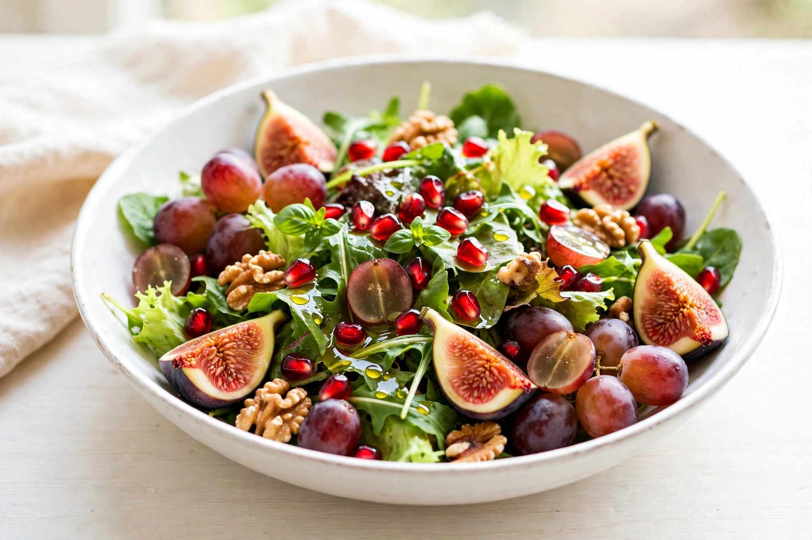
Fruits, Honey & Sweets · Recipe 14
Pomegranate
& Fig Salad
“a land with wheat and barley, vines and fig trees, pomegranates, olive oil and honey;” — Deuteronomy 8:8 (NIV)
The Promised Land is described by its food: wheat and barley, vines and figs, pomegranates, olive oil and honey. This bright salad gathers those seven gifts on one plate.
Recipe 14 · Pomegranate & Fig Salad
What You Need
- 2 cups mixed greens
- 1 cup pomegranate seeds
- 4 fresh figs, quartered
- 1 cup red grapes, halved
- 1/4 cup toasted walnuts
- 2 tbsp olive oil
- 1 tbsp lemon juice · 1 tsp honey
- Crumbled feta (optional)
How to Make It
- Whisk the oil, lemon juice and honey.
- Toss the greens with the dressing.
- Top with the pomegranate, figs and grapes.
- Scatter the walnuts and feta.
- Serve at once, while the figs are fresh.
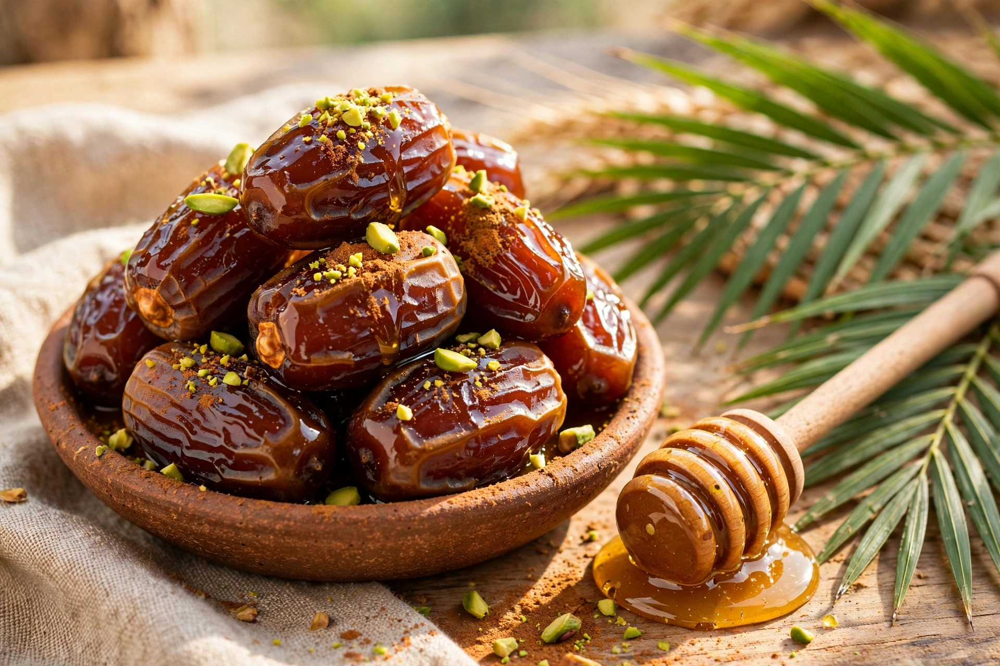
Fruits, Honey & Sweets · Recipe 15
Honey-Glazed Dates
“Your stature is like that of the palm … I said, ‘I will climb the palm tree; I will take hold of its fruit.’” — Song of Songs 7:7-8 (NIV)
The Song compares the beloved to a palm tree — and the palm of that land is the date palm, whose sweet fruit hangs in heavy clusters. These dates are warmed and glazed in honey, a small taste of that poetry.
Recipe 15 · Honey-Glazed Dates
What You Need
- 20 Medjool dates, pitted
- 3 tbsp honey
- 1 tbsp butter
- 1/2 tsp cinnamon
- A pinch of sea salt
- Chopped pistachios, to finish
How to Make It
- Warm the butter in a small pan.
- Add the dates; cook 2 minutes, turning gently.
- Pour in the honey and cinnamon.
- Cook 1 more minute, until glazed.
- Sprinkle with salt and pistachios; serve warm.
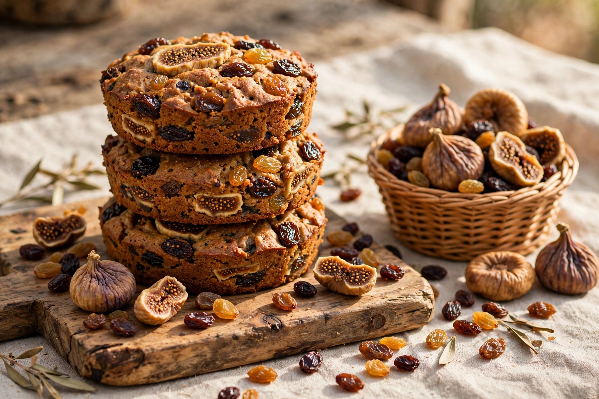
Fruits, Honey & Sweets · Recipe 16
Abigail’s Raisin
& Fig Cakes
“Abigail acted quickly. She took two hundred loaves of bread, two skins of wine, five dressed sheep, five seahs of roasted grain, a hundred cakes of raisins and two hundred cakes of pressed figs, and loaded them on donkeys.” — 1 Samuel 25:18 (NIV)
Abigail acted quickly — loading donkeys with bread, grain, and a hundred cakes of raisins and two hundred cakes of pressed figs — and her gift turned anger into peace. These chewy fruit cakes carry that same spirit: a gift made in haste, given with wisdom.
Recipe 16 · Abigail’s Raisin & Fig Cakes
What You Need
- 1 cup chopped dried figs
- 1 cup raisins
- 1 1/2 cups flour
- 1 tsp baking powder · 1/2 tsp cinnamon
- 1/4 cup honey
- 1/4 cup olive oil
- 1 egg · 1/4 cup water
How to Make It
- Heat the oven to 350°F (175°C).
- Mix the flour, baking powder and cinnamon.
- Stir in the figs, raisins, honey, oil, egg and water.
- Drop spoonfuls onto a lined baking sheet.
- Bake 12–14 minutes, until set. Cool on a rack.
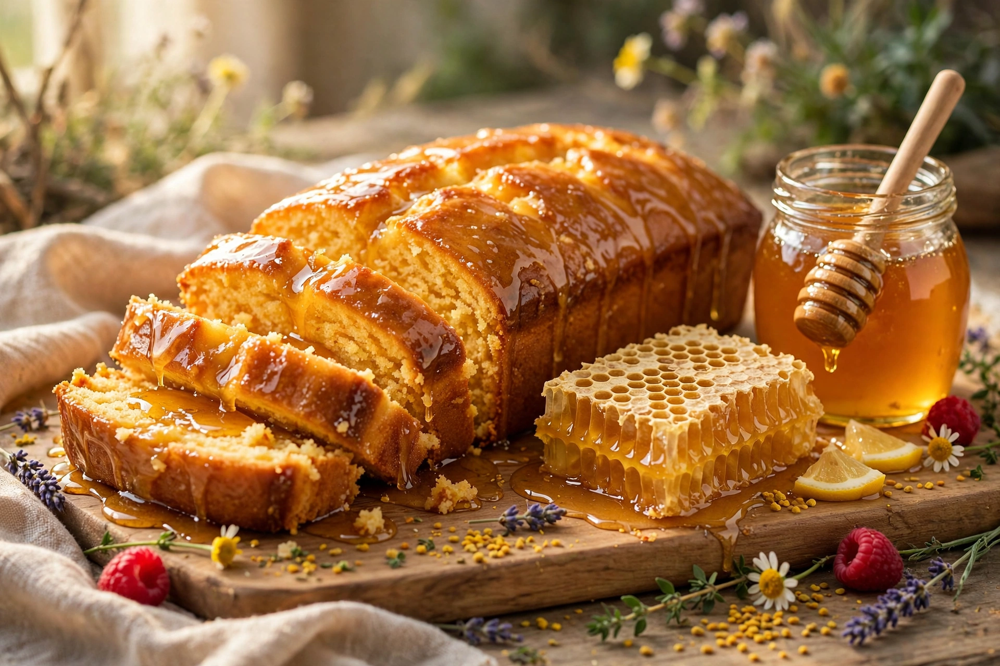
Fruits, Honey & Sweets · Recipe 17
Samson’s
Honeycomb Treat
“…in it he saw a swarm of bees and some honey. He scooped out the honey with his hands and ate as he went along.” — Judges 14:8-9 (NIV)
Samson found honey in the most unlikely place — inside the carcass of the lion he had killed — and he scooped it out and shared it with his parents as he walked. These honey cakes are sweet and simple, best eaten warm and shared on the road.
Recipe 17 · Samson’s Honeycomb Treat
What You Need
- 2 cups flour
- 1 tbsp baking powder · 1/2 tsp salt
- 1/2 cup honey
- 1/2 cup milk
- 1/4 cup melted butter
- 1 egg · 1 tsp vanilla
- Honeycomb or extra honey, to serve
How to Make It
- Heat the oven to 350°F (175°C).
- Whisk the flour, baking powder and salt.
- Whisk the honey, milk, butter, egg and vanilla.
- Stir the wet mixture into the dry; pour into a lined loaf pan.
- Bake 30 minutes. Serve warm with honeycomb.
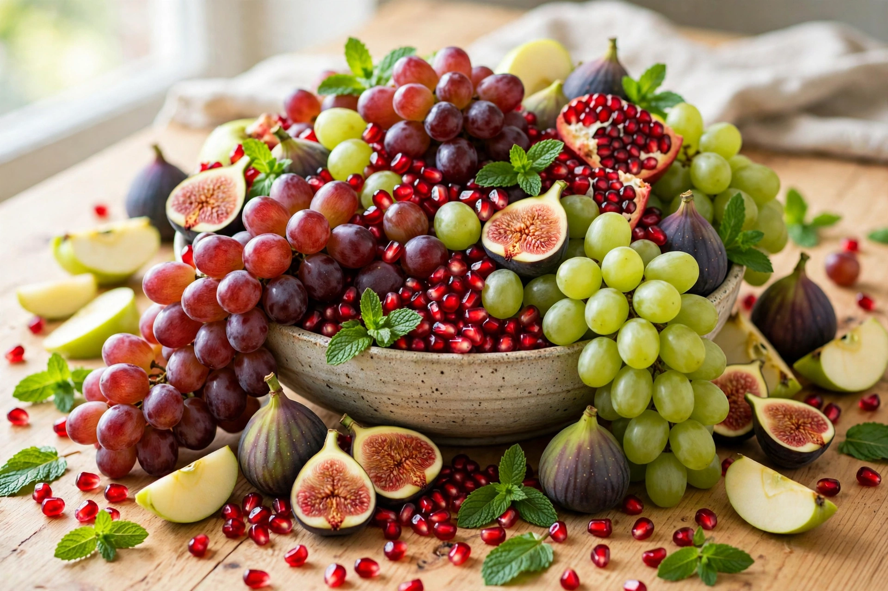
Fruits, Honey & Sweets · Recipe 18
Grapes of Eshcol
Fruit Bowl
“When they reached the Valley of Eshkol, they cut off a branch bearing a single cluster of grapes. Two of them carried it on a pole between them, along with some pomegranates and figs.” — Numbers 13:23 (NIV)
The spies came back from Canaan carrying a single cluster of grapes so big it took two men and a pole to carry it — with pomegranates and figs beside it. This generous fruit bowl is that first taste of the Promised Land.
Recipe 18 · Grapes of Eshcol Fruit Bowl
What You Need
- 2 cups red grapes · 2 cups green grapes
- 1 pomegranate, seeded
- 4 fresh figs, quartered
- 1 apple, diced
- 1 tbsp honey · 1 tbsp lemon juice
- Fresh mint, to finish
How to Make It
- Whisk the honey and lemon juice.
- Toss the grapes, apple and pomegranate seeds.
- Add the figs gently.
- Drizzle with the honey-lemon.
- Chill 15 minutes; top with mint.
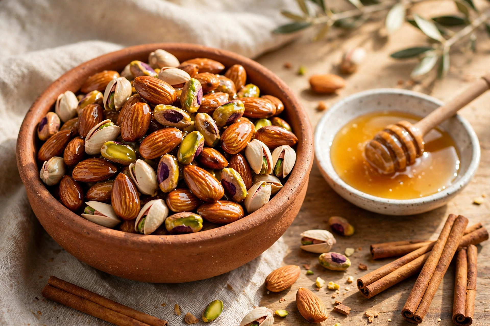
Fruits, Honey & Sweets · Recipe 19
Almond & Pistachio
Snack Mix
“Put some of the best products of the land in your bags and take them down to the man as a gift—a little balm and a little honey, some spices and myrrh, some pistachio nuts and almonds.” — Genesis 43:11 (NIV)
Jacob sent his sons back to Egypt with the best his land could give — a little honey, spices, pistachio nuts and almonds — a gift to soften a stranger’s heart. This roasted nut mix is that gift in a bowl: warm, sweet, and made for sharing.
Recipe 19 · Almond & Pistachio Snack Mix
What You Need
- 1 cup almonds
- 1 cup shelled pistachios
- 1/2 cup cashews
- 2 tbsp honey
- 1 tbsp olive oil
- 1/2 tsp cinnamon
- 1/4 tsp salt · 1/4 tsp ground cardamom
How to Make It
- Heat the oven to 325°F (165°C).
- Toss the nuts with the oil, honey and spices.
- Spread on a lined baking sheet.
- Roast 12 minutes, stirring once.
- Cool completely; the glaze will crisp as it cools.
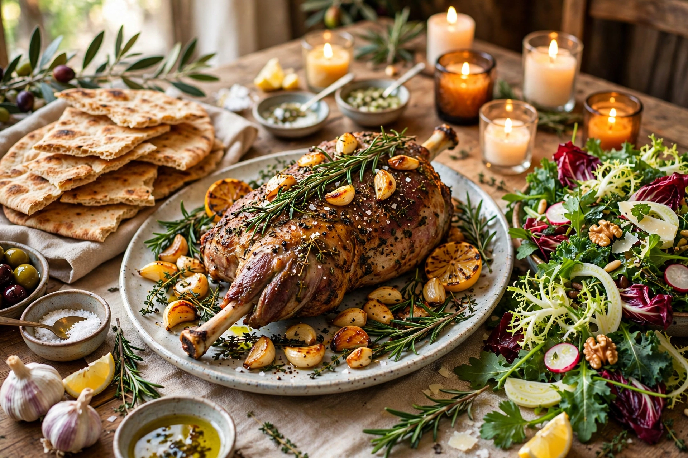
Feasts & Celebrations · Recipe 20
Passover Lamb Roast
“That same night they are to eat the meat roasted over the fire, along with bitter herbs, and bread made without yeast.” — Exodus 12:8 (NIV)
On the night of the Passover, the lamb was roasted over fire and eaten with bitter herbs and bread without yeast — a meal eaten in haste, with sandals on and staff in hand. This herb-roasted lamb keeps that memory: fire, herbs, and bread, shared at one table.
Recipe 20 · Passover Lamb Roast
What You Need
- 1 leg of lamb (about 4 lb)
- 4 garlic cloves, sliced
- 2 tbsp olive oil
- 1 tbsp rosemary · 1 tbsp thyme
- 1 tsp salt · 1/2 tsp pepper
- Bitter-herb salad and unleavened bread, to serve
How to Make It
- Heat the oven to 375°F (190°C).
- Cut small slits in the lamb; tuck in the garlic.
- Rub with oil, rosemary, thyme, salt and pepper.
- Roast 1 hour 20 minutes for medium.
- Rest 15 minutes; carve and serve with bitter herbs and bread.
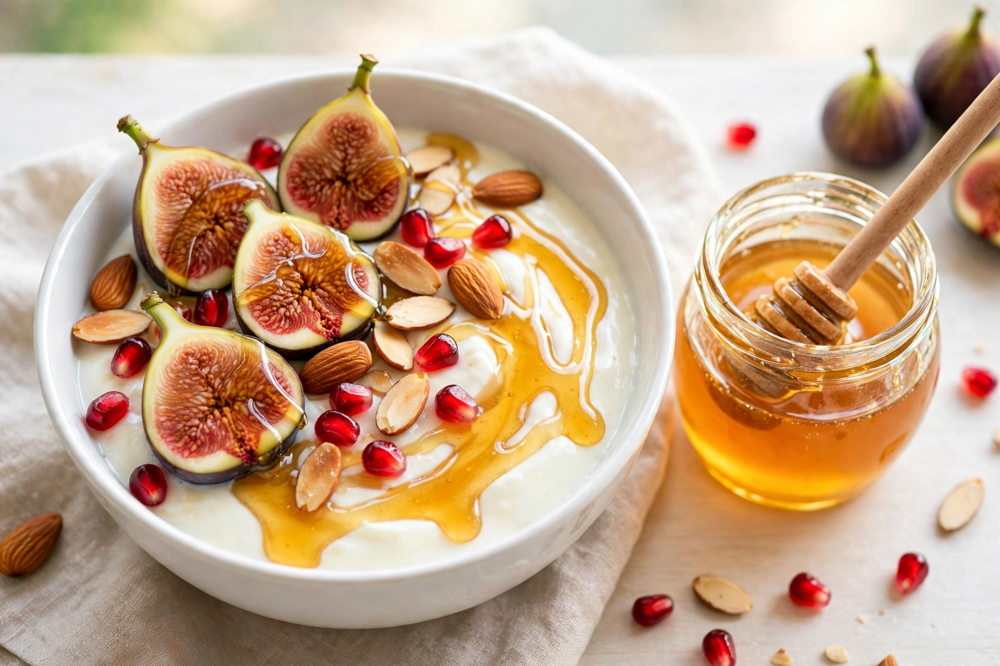
Feasts & Celebrations · Recipe 21
Milk & Honey
Feast Bowl
“…into a good and spacious land, a land flowing with milk and honey…” — Exodus 3:8 (NIV)
God’s promise to Moses was a land flowing with milk and honey — a land of plenty, not scarcity. This creamy bowl is that promise for breakfast: thick yogurt, honey, figs and nuts, sweet and generous.
Recipe 21 · Milk & Honey Feast Bowl
What You Need
- 2 cups thick yogurt (Greek-style)
- 3 tbsp honey
- 4 fresh figs, quartered
- 1/4 cup toasted almonds
- 2 tbsp pomegranate seeds
- 1 tsp vanilla extract
- A pinch of cinnamon
How to Make It
- Stir the vanilla into the yogurt.
- Spoon into bowls.
- Top with figs, almonds and pomegranate.
- Drizzle generously with honey.
- Dust with cinnamon; serve at once.
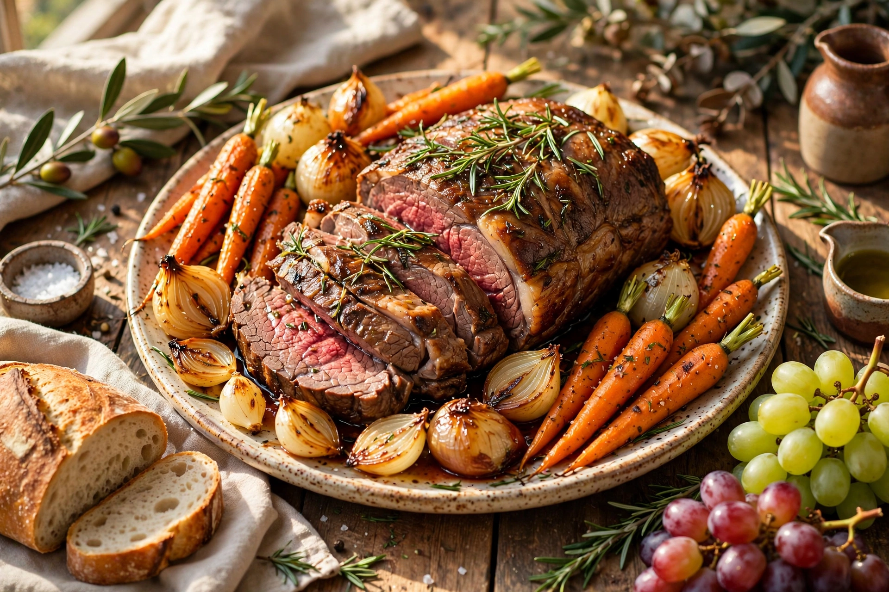
Feasts & Celebrations · Recipe 22
The Prodigal’s
Celebration Roast
“Bring the fattened calf and kill it. Let’s have a feast and celebrate.” — Luke 15:23 (NIV)
When the lost son came home, his father did not lecture him — he called for the fattened calf and a feast. This roast is for a homecoming: rich, joyful, and cooked for a full table.
Recipe 22 · The Prodigal’s Celebration Roast
What You Need
- 1 beef roast (about 3 lb)
- 2 tbsp olive oil
- 3 garlic cloves, minced
- 1 tbsp rosemary
- 1 tsp salt · 1/2 tsp pepper
- 2 onions, quartered · 4 carrots, cut into chunks
- 1 cup beef broth
How to Make It
- Heat the oven to 325°F (165°C).
- Rub the roast with oil, garlic, rosemary, salt and pepper.
- Sear in a hot pot on all sides.
- Add the onions, carrots and broth; cover.
- Roast 2 1/2 hours, until tender. Rest 15 minutes, then slice.
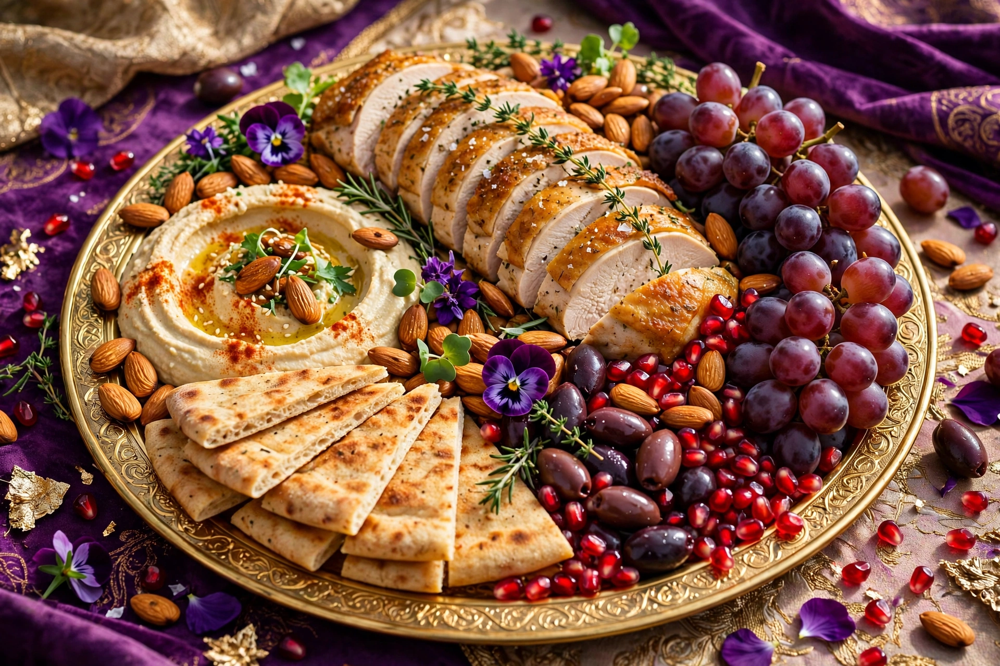
Feasts & Celebrations · Recipe 23
Esther’s Royal
Banquet Platter
“and in the third year of his reign he gave a banquet for all his nobles and officials. The military leaders of Persia and Media, the princes, and the nobles of the provinces were present.” — Esther 1:3 (NIV)
King Xerxes gave a banquet for all his nobles and officials — a table meant to show the wealth of a kingdom. This colorful sharing platter is fit for that court: roasted meats, breads, fruits and dips, arranged to be seen before it is eaten.
Recipe 23 · Esther’s Royal Banquet Platter
What You Need
- 1 lb roasted chicken or lamb, sliced
- 2 cups hummus
- 4 flatbreads, cut into wedges
- 1 cup grapes · 1 cup pomegranate seeds
- 1/2 cup olives · 1/2 cup roasted almonds
- Fresh herbs and olive oil, to finish
How to Make It
- Arrange the hummus in a wide bowl on a large platter.
- Fan the sliced meat beside it.
- Add the flatbread wedges around the edge.
- Fill the gaps with grapes, pomegranate, olives and almonds.
- Drizzle with olive oil and herbs; serve for sharing.
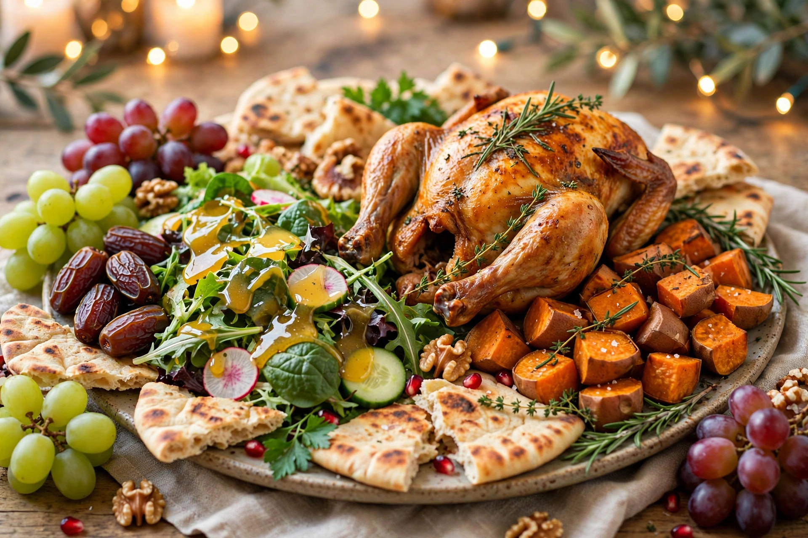
Feasts & Celebrations · Recipe 24
Nehemiah’s
Joyful Feast
“Nehemiah said, “Go and enjoy choice food and sweet drinks, and send some to those who have nothing prepared. This day is holy to our Lord. Do not grieve, for the joy of the Lord is your strength.”” — Nehemiah 8:10 (NIV)
After the Law was read, the people wept — and Nehemiah told them to stop grieving and feast instead: choice food and sweet drinks, with portions sent to those who had nothing prepared. This sweet-and-savory spread is made for that kind of day — and for sharing with someone who has nothing.
Recipe 24 · Nehemiah’s Joyful Feast
What You Need
- 1 roasted chicken, carved
- 2 cups roasted sweet potatoes
- 1 cup dates, pitted · 1 cup grapes
- 2 cups mixed greens
- 2 tbsp olive oil · 1 tbsp lemon juice
- 1 tbsp honey
- Warm flatbread
How to Make It
- Arrange the chicken on a large platter.
- Add the sweet potatoes, dates and grapes.
- Toss the greens with oil, lemon and honey.
- Set the salad beside the chicken.
- Serve with flatbread — and pack a portion for someone who has nothing prepared.
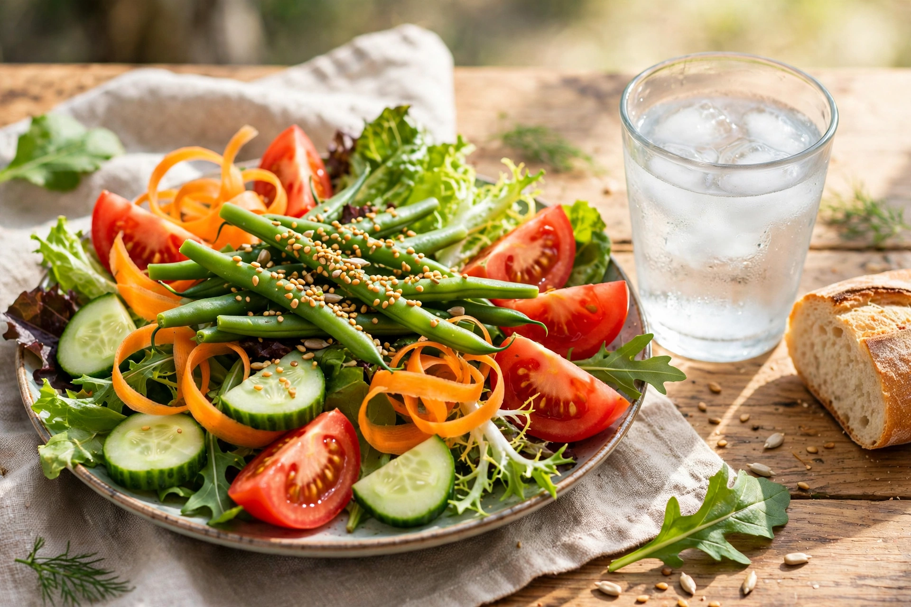
Feasts & Celebrations · Recipe 25
Daniel’s Garden Plate
“Please test your servants for ten days: Give us nothing but vegetables to eat and water to drink.” — Daniel 1:12 (NIV)
Daniel asked for a test: ten days of vegetables and water, against the king’s rich food — and at the end of it, he and his friends looked healthier than all the rest. This fresh garden plate is that bold choice: crisp, simple, and full of life.
Recipe 25 · Daniel’s Garden Plate
What You Need
- 2 cups mixed salad leaves
- 1 cucumber, sliced · 2 tomatoes, wedged
- 1 carrot, shaved into ribbons
- 1 cup steamed green beans
- 1/4 cup toasted seeds (pumpkin or sunflower)
- 2 tbsp olive oil · 1 tbsp lemon juice
- Salt, to taste
- Water and simple bread, to serve
How to Make It
- Arrange the leaves on a wide plate.
- Add the cucumber, tomatoes, carrot and beans.
- Whisk the oil, lemon and salt; drizzle over.
- Scatter the seeds.
- Serve with cold water and simple bread.
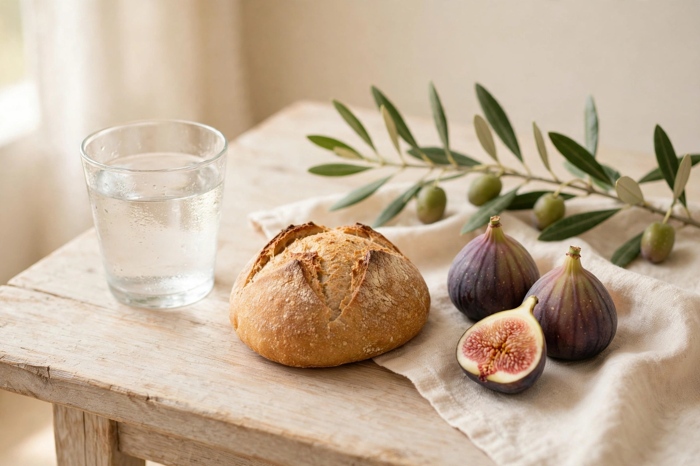
Articles · Article 1
The Benefits
of Fasting
“When you fast, do not look somber as the hypocrites do, for they disfigure their faces to show others they are fasting.” — Matthew 6:16 (NIV) “Go, gather together all the Jews who are in Susa, and fast for me. Do not eat or drink for three days, night or day.” — Esther 4:16 (NIV)
Fasting is one of the oldest practices in the Bible — setting aside food for a time so the heart can turn fully toward God. Jesus did not say if you fast, but when you fast. It is a way to pray with the whole body: to pause, to listen, and to remember that every good gift comes from the Lord.
Article 1 · The Benefits of Fasting
Six Types of Fasting in the Bible
- 1Complete fast — no food, no water.Esther 4:16 (three days) · Acts 9:9 (Paul, three days)
- 2Normal fast — no food, water only.Matthew 4:2 (Jesus, forty days)
- 3Partial fast — vegetables and water only.Daniel 1:12 (ten days) · Daniel 10:3 (three weeks)
- 4Daytime fast — fasting until evening.Judges 20:26 · 2 Samuel 1:12
- 5Corporate fast — a whole community together.Joel 2:15 · Jonah 3:5-7 (Nineveh)
- 6Private fast — quietly, not for show.Matthew 6:16-18
Articles · Article 2
Water —
the Gift of Life
“but whoever drinks the water I give them will never thirst. Indeed, the water I give them will become in them a spring of water welling up to eternal life.” — John 4:14 (NIV) “Come, all you who are thirsty, come to the waters; and you who have no money, come, buy and eat! Come, buy wine and milk without money and without cost.” — Isaiah 55:1 (NIV)
Water is the first gift God gives a thirsty world — and in the Bible it is never only water. Jesus promised a spring that never runs dry, and Isaiah called the thirsty to come and drink without money. This article is about the water we drink every day, and the living water that satisfies for good.
Article 2 · Water — the Gift of Life
Water in Daily Life — Then and Now
- 1Drawn by hand — In Bible times, water was carried from wells and springs in clay jars — a daily task and a daily gift.
- 2A place to meet — Wells were where people gathered: travelers rested, families talked, and Jesus met a Samaritan woman at a well at noon.
- 3Drink with thanks — A glass of water is easy to forget. In a dry land, every cup was a reminder that God provides.
- 4Living water — Jesus said the water he gives becomes a spring within us, welling up to eternal life.John 4:14
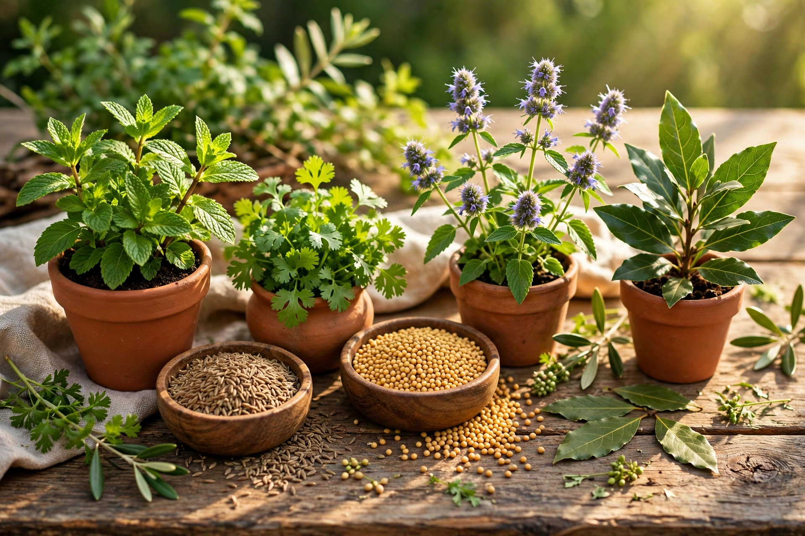
Articles · Article 3
Herbs of
the Bible
“Then God said, “I give you every seed-bearing plant on the face of the whole earth and every tree that has fruit with seed in it. They will be yours for food.”” — Genesis 1:29 (NIV) “He makes grass grow for the cattle, and plants for people to cultivate—bringing forth food from the earth:” — Psalm 104:14 (NIV)
From the very first chapter, God gave plants for food — seed-bearing plants and trees with fruit. The psalm says he makes plants for people to cultivate, bringing food from the earth. This article gathers the herbs of the Bible: the flavors of the kitchen and the scents of the garden, given for our use.
Article 3 · Herbs of the Bible
Herbs You Can Grow and Use
- 1Mint — Fresh and cooling, for teas and salads.
- 2Cumin — Warm and earthy, for stews and breads.
- 3Coriander — Its seed is white and round — the Bible compares manna to coriander seed.Exodus 16:31
- 4Mustard — Jesus compared faith to a mustard seed: tiny, yet it grows into a tree.
- 5Hyssop — A small, fragrant herb used in cleansing and at the Passover.
- 6Bay leaf — A fragrant leaf for slow-cooked stews and roasts.
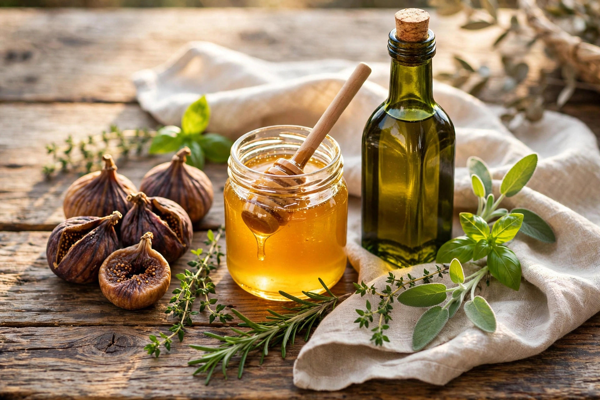
Articles · Article 4
Home Remedies
of Bible Times
“Isaiah had said, “Prepare a poultice of figs and apply it to the boil, and he will recover.”” — Isaiah 38:21 (NIV) “He went to him and bandaged his wounds, pouring on oil and wine. Then he put the man on his own donkey, brought him to an inn and took care of him.” — Luke 10:34 (NIV)
When King Hezekiah was sick, Isaiah told them to prepare a poultice of figs — and he recovered. When a wounded traveler lay on the road, the Good Samaritan bandaged his wounds, pouring on oil and wine. These are the simple remedies of Bible times: figs, honey and olive oil, used with care and compassion.
Article 4 · Home Remedies of Bible Times
Three Remedies from Bible Times
- 1Fig poultice — Mashed figs spread on cloth and laid on a boil, as Isaiah directed for King Hezekiah.Isaiah 38:21
- 2Olive oil — Poured on wounds to soothe and protect them, as the Good Samaritan did.Luke 10:34
- 3Honey — Used for centuries to soothe skin and to sweeten warm drinks for a sore throat.